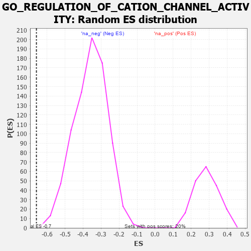

| | | Dataset | 7d |
| Phenotype | NoPhenotypeAvailable |
| Upregulated in class | na_neg |
| GeneSet | GO_REGULATION_OF_CATION_CHANNEL_ACTIVITY |
| Enrichment Score (ES) | -0.65865535 |
| Normalized Enrichment Score (NES) | -1.8432686 |
| Nominal p-value | 0.00124533 |
| FDR q-value | 0.009818015 |
| FWER p-Value | 0.227 |
Table: GSEA Results Summary
 Fig 1: Enrichment plot: GO_REGULATION_OF_CATION_CHANNEL_ACTIVITY
Fig 1: Enrichment plot: GO_REGULATION_OF_CATION_CHANNEL_ACTIVITY
Profile of the Running ES Score & Positions of GeneSet Members on the Rank Ordered List
| PROBE | GENE SYMBOL | GENE_TITLE | RANK IN GENE LIST | RANK METRIC SCORE | RUNNING ES | CORE ENRICHMENT | | 1 | MEF2C | | | 1054 | 0.473 | -0.1202 | No |
| 2 | JPH1 | | | 1741 | 0.347 | -0.1974 | No |
| 3 | SLMAP | | | 1744 | 0.346 | -0.1884 | No |
| 4 | FMR1 | | | 1816 | 0.334 | -0.1885 | No |
| 5 | KCNC2 | | | 2075 | 0.295 | -0.2131 | No |
| 6 | LRRC7 | | | 2080 | 0.294 | -0.2058 | No |
| 7 | CDK5 | | | 3480 | 0.080 | -0.3800 | No |
| 8 | PDE4B | | | 4089 | -0.022 | -0.4560 | No |
| 9 | STAC | | | 4327 | -0.064 | -0.4842 | No |
| 10 | ADRB2 | | | 4352 | -0.068 | -0.4854 | No |
| 11 | JPH3 | | | 4481 | -0.091 | -0.4991 | No |
| 12 | MYO5A | | | 4787 | -0.155 | -0.5334 | No |
| 13 | DLG1 | | | 4860 | -0.169 | -0.5380 | No |
| 14 | DRD2 | | | 5088 | -0.221 | -0.5607 | No |
| 15 | MMP9 | | | 5108 | -0.227 | -0.5570 | No |
| 16 | GRIN1 | | | 5381 | -0.291 | -0.5835 | No |
| 17 | DLG4 | | | 5388 | -0.293 | -0.5764 | No |
| 18 | ACTN2 | | | 5960 | -0.458 | -0.6362 | Yes |
| 19 | STAC2 | | | 5987 | -0.466 | -0.6270 | Yes |
| 20 | NETO2 | | | 6009 | -0.475 | -0.6170 | Yes |
| 21 | DLG2 | | | 6126 | -0.513 | -0.6179 | Yes |
| 22 | STIM1 | | | 6169 | -0.528 | -0.6091 | Yes |
| 23 | GALR2 | | | 6355 | -0.599 | -0.6164 | Yes |
| 24 | DYSF | | | 6481 | -0.654 | -0.6147 | Yes |
| 25 | VAMP2 | | | 6525 | -0.672 | -0.6022 | Yes |
| 26 | REM1 | | | 6530 | -0.676 | -0.5846 | Yes |
| 27 | CCR2 | | | 7003 | -0.939 | -0.6191 | Yes |
| 28 | ANK2 | | | 7298 | -1.170 | -0.6249 | Yes |
| 29 | CALM1 | | | 7567 | -1.499 | -0.6186 | Yes |
| 30 | GRIA3 | | | 7648 | -1.642 | -0.5848 | Yes |
| 31 | ANK3 | | | 7690 | -1.740 | -0.5436 | Yes |
| 32 | PDE4D | | | 7764 | -1.944 | -0.5009 | Yes |
| 33 | PKD2 | | | 7822 | -2.167 | -0.4502 | Yes |
| 34 | KCNC1 | | | 7835 | -2.249 | -0.3916 | Yes |
| 35 | GRIA1 | | | 7836 | -2.260 | -0.3313 | Yes |
| 36 | CALM3 | | | 7869 | -2.525 | -0.2679 | Yes |
| 37 | GRIA2 | | | 7885 | -2.684 | -0.1981 | Yes |
| 38 | DAPK1 | | | 7950 | -3.767 | -0.1056 | Yes |
| 39 | GRIA4 | | | 7961 | -4.049 | 0.0013 | Yes |
Table: GSEA details [plain text format]

Fig 2: GO_REGULATION_OF_CATION_CHANNEL_ACTIVITY: Random ES distribution
Gene set null distribution of ES for GO_REGULATION_OF_CATION_CHANNEL_ACTIVITY